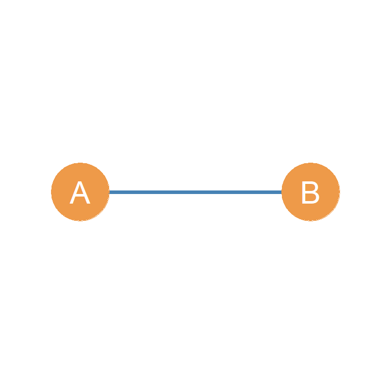
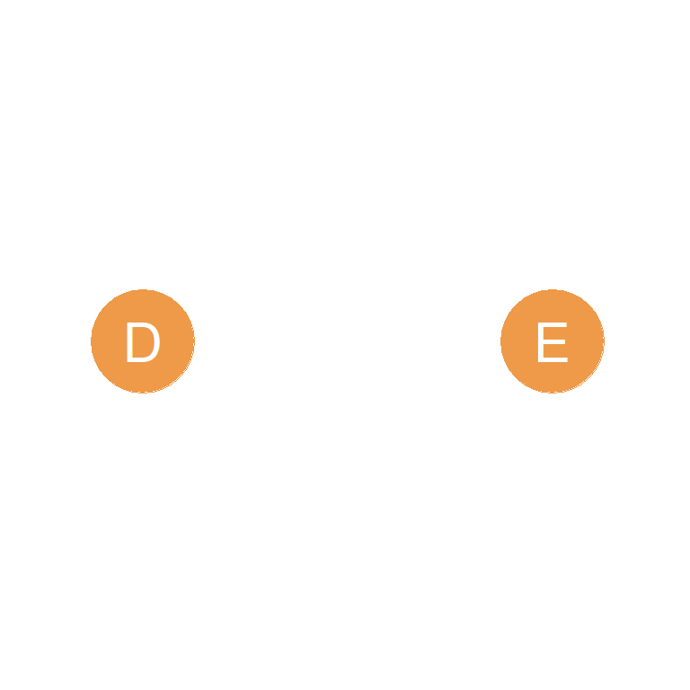
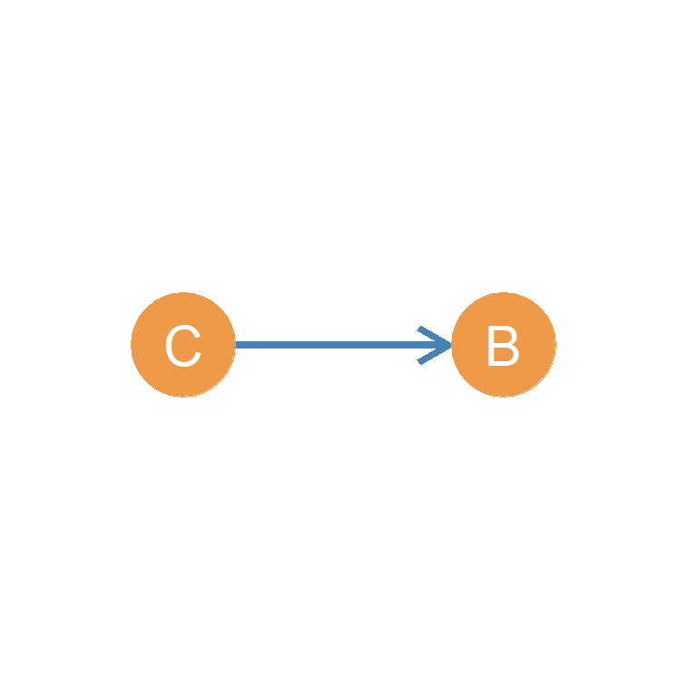
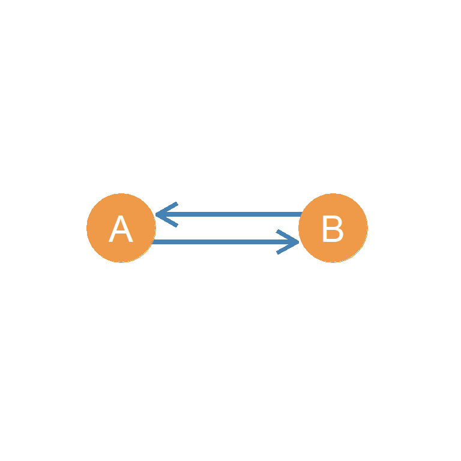

10 Dyads
In a graph, every pair of nodes, whether joined by an edge or not, is referred to as a dyad. Essentially, a dyad is any subgraph of order two of a larger graph. Generally researchers only refer to dyads when describing features of the network, although it it important to remember that ties that do not exist, but could exist, may be socially meaningful.
Additionally, when may consider the relationship among sets of three actors, we describe this as a triad. Triads have very important sociological properties that we will explore in ?sec-triads. Dyads, triads and larger motifs constitute the (lego-like) building blocks of social network.s For now however, the terms provide a language that we can use to describe parts of the graph.
10.1 Types of Undirected Dyads
Using Figure 8.1 as the reference graph \((G)\), we can define a subgraph \((G')\) containing only nodes A and B. This is shown in Figure 10.1(a). In the same way, we could define a subgraph containing only nodes D and E. This is shown in Figure 10.1(b). Each figure portrays the two types of dyads that can exist in a undirected graph. Either a dyad with two nodes share an edge, or they don’t.
The dyad shown in Figure 10.1(a), with two nodes linked by an edge, is called a connected dyad, while the dyad shown in Figure 10.1(b) is called a null dyad. Since there can only be two types of dyads an undirected graph, every pair of actors is either part of a connected or a null dyad. Both types of dyads are defined by subgraphs of the same order (two), but they are different in size. The null dyad is size zero, and the connected dyad is size one.


| A | B | C | D | E | F | G | H | I | |
|---|---|---|---|---|---|---|---|---|---|
| A | -- | 1 | 1 | 1 | 1 | 0 | 0 | 0 | 0 |
| B | 1 | -- | 1 | 1 | 0 | 0 | 0 | 0 | 0 |
| C | 1 | 1 | -- | 1 | 1 | 0 | 0 | 0 | 0 |
| D | 1 | 1 | 1 | -- | 1 | 1 | 0 | 0 | 0 |
| E | 1 | 0 | 1 | 1 | -- | 0 | 0 | 0 | 0 |
| F | 0 | 0 | 0 | 1 | 0 | -- | 1 | 1 | 1 |
| G | 0 | 0 | 0 | 0 | 0 | 1 | -- | 1 | 1 |
| H | 0 | 0 | 0 | 0 | 0 | 1 | 1 | -- | 1 |
| I | 0 | 0 | 0 | 0 | 0 | 1 | 1 | 1 | -- |
There are certain fixed relations between some of the basic graph metrics we covered in Chapter 5 and the number of mutual and null dyads in an undirected graph. Let us use \(N_M\) to refer to the number of mutual dyads in an undirected graph. Table 21.1 shows the adjacency matrix for the graph shown in Figure 8.1. The number of mutual dyads in Figure 8.1, then will be given by:
\[ N_M = \frac{\sum_i \sum_j a_{ij}}{2} \tag{10.1}\]
Equation 10.1 says that the number of mutual dyads is equals to the sum of all the cells in the adjacency matrix divided by two. In this case, this will be 32 \(\div\) 2 \(=\) 16. So there are 16 mutual dyads in Figure 8.1.
| A | B | C | D | E | F | G | H | I | |
|---|---|---|---|---|---|---|---|---|---|
| A | -- | 0 | 0 | 0 | 0 | 1 | 1 | 1 | 1 |
| B | 0 | -- | 0 | 0 | 1 | 1 | 1 | 1 | 1 |
| C | 0 | 0 | -- | 0 | 0 | 1 | 1 | 1 | 1 |
| D | 0 | 0 | 0 | -- | 0 | 0 | 1 | 1 | 1 |
| E | 0 | 1 | 0 | 0 | -- | 1 | 1 | 1 | 1 |
| F | 1 | 1 | 1 | 0 | 1 | -- | 0 | 0 | 0 |
| G | 1 | 1 | 1 | 1 | 1 | 0 | -- | 0 | 0 |
| H | 1 | 1 | 1 | 1 | 1 | 0 | 0 | -- | 0 |
| I | 1 | 1 | 1 | 1 | 1 | 0 | 0 | 0 | -- |
How do we find the number of null dyads? Well, remember our handy dandy matrix operation called the graph complement, which in matrix algebra is defined as \(A' = 1- A\) where \(A\) is the adjacency matrix of the graph. Recall that \(1- A\) means that we subtract each cell \(a_{ij}\) of the original matrix from one \(1- a_{ij}\) and create a new matrix \(A'\) from the original; this is shown in Table 10.2 for the graph in Figure 8.1.
Once we have \(A'\) we can figure out the number of null dyads in the graph. Just like before, the number of null dyads is then given by:
\[ N_N = \frac{\sum_i \sum_j a'_{ij}}{2} \tag{10.2}\]
Which says that the number of null dyads in the graph is just the sum of the entries of the graph complement matrix \(A'\) divided by two.
This makes sense, because every entry in the complement matrix \(A'\) is reversed relative to the original adjacency matrix \(A\), so that \(a'_{ij} = 0\) only if \(a_{ij} = 1\) and \(a'_{ij} = 1\) only if \(a_{ij} = 0\). This means summing up the cells of \(A'\) will record every instance of a lack of connection between the row and column nodes in \(A\) which is exactly what we want.
In this case, \(\sum_i \sum_j a'_{ij}\) = 40, so the number of null dyads is 40 \(\div\) 2 = 20. So there are 20 null dyads in Figure 8.1.
Note that if we sum \(N_M\) and \(N_N\) for the undirected graph we get: \(N_M + N_N =\) 16 \(+\) 20 = 36. Which is equal to \((9 \times (9-1)) \div 2\) = \((9 \times 8) \div 2\) = 36 or the maximum size for the undirected graph of order nine. So the total number of dyads mutual and null in an undirected graph is equal to the graph’s maximum size.
10.2 Types of Directed Dyads


While in an undirected graph there can only be two types of dyads, in a directed graph like the one shown in Figure 8.2, there can three different kinds of dyads. The reason for this is that in a directed graph, connected dyads can be of two kinds.
On the one hand, we can have a dyad like that of actors C and B in Figure 8.2, who are described as an asymmetrically connected dyad (or asymmetric dyad for short), as shown in the subgraph Figure 10.2(a). This is because while C sends a tie to B, B does not send a tie back to C. In this sense, asymmetric dyads are by definition non-reciprocal.
In contrast, actors A and B in Figure 8.2 can be described as a mutually connected dyad (or mutual dyad for short), their subgraph is shown in Figure 10.2(b). Actors A and B are part of a mutual dyad because A sends a tie to B, and B sends a tie back to A. In this sense, mutual dyads are by definition reciprocal.
Thus, in a directed graph representing a network of asymmetric ties, every pair of actors in the network can be classified as belonging to one of three types of dyads: Mutual (connected bi-directionally), Asymmetric (connected uni-directionally), and Null (not connected in any way). An easy way to remember this is that the first letters of each term in this classification spells “MAN.”
It is important to keep distinct the notion of asymmetry when used to refer to types of edges in a graph, from when it is used to refer to types of dyads. For instance, a mutual dyad is composed of a pair of asymmetric edges! When used to refer to edges, the notion of asymmetry implies only directionality of the single edge, while when used to refer to dyads the notion of asymmetry implies non-reciprocity of the whole dyad.
A lot of the time we collect social network information that has a directed basis. For instance, we ask people whether the “know” someone, or whether they consider somebody a “friend.” These type of network data are called nominations, and they are very common in social network analysis.
For instance may ask an individual \(E\) (let’s call her Jennifer) whether they nominate another individual \(C\) (in their school, classroom, dorm, office) as a “friend” (let’s call her Mariah), and they say “yes I know Mariah,” or “Mariah is my friend.” As with the “I don’t know her” meme,1 sometimes it happens Jennifer says they know Mariah, or “nominates” Mariah as a friend, but Mariah says they don’t know Jennifer, or fail to nominate Jennifer as a friend back!
This creates a situation in which most social network data sets, end up being composed of directed dyads with asymmetric friendship or acquaintance relations, even if the researcher thought they would end up with symmetric ties (Carley and Krackhardt 1996).
10.3 The Dyad Census
Just like the undirected case, we can use matrices and simple operations on matrices to figure out the number of mutual (\(N_M\)), asymmetric (\(N_A\)) and null (\(N_N\)) dyads in a directed graph. This is called the directed graph’s dyad census. We will need four matrices to make this happen: (1) The original adjacency matrix, (2) the transpose of the adjacency matrix \(A^T\), (3) the complement of the adjacency matrix \(A'\) and (4) the complement of the transpose \(A'^{T}\).
Let’s take Figure 8.2 as the graph of interest. In which case, the corresponding adjacency matrix. The four required matrices are shown in Table 10.3:
- Table 10.3(a) records the original adjacency relations (\(A\)) in the directed graph from Figure 8.2.
- Table 10.3(b) is the transpose of the adjacency matrix (\(A^T\)) as defined in Section 16.3.
- Table 10.3(c) records the non-adjacencies of the original adjacency matrix, that is for every pair nodes that are non-adjacent in Figure 8.2, Table 10.3(c) has a 1 in the corresponding cell and for every pair of nodes that is adjacent in Figure 8.2, Table 10.3(c) has a zero. More accurately, Table 10.3(c) shows the adjacency matrix corresponding to the complement of the directed graph in Figure 8.2 (\(A'\)) as defined in Section 2.9. This is obtained by subtracting one from each of the cells of the original adjacency matrix: \(A' = 1 - A\).
- Table 10.3(d) is just the transpose of Table 10.3(c), which can also be obtained by subtracting one from the entries in Table 10.3(b): \(A'^T = 1 - A^T\).
Table 10.3: The Four matrices needed for the dyad census.
| A | B | C | D | E | F | G | |
|---|---|---|---|---|---|---|---|
| A | -- | 1 | 0 | 0 | 0 | 1 | 0 |
| B | 1 | -- | 0 | 1 | 0 | 0 | 0 |
| C | 0 | 1 | -- | 0 | 0 | 0 | 0 |
| D | 0 | 1 | 0 | -- | 0 | 0 | 0 |
| E | 0 | 0 | 1 | 1 | -- | 0 | 0 |
| F | 1 | 0 | 0 | 0 | 0 | -- | 0 |
| G | 0 | 0 | 0 | 1 | 0 | 1 | -- |
| A | B | C | D | E | F | G | |
|---|---|---|---|---|---|---|---|
| A | -- | 1 | 0 | 0 | 0 | 1 | 0 |
| B | 1 | -- | 1 | 1 | 0 | 0 | 0 |
| C | 0 | 0 | -- | 0 | 1 | 0 | 0 |
| D | 0 | 1 | 0 | -- | 1 | 0 | 1 |
| E | 0 | 0 | 0 | 0 | -- | 0 | 0 |
| F | 1 | 0 | 0 | 0 | 0 | -- | 1 |
| G | 0 | 0 | 0 | 0 | 0 | 0 | -- |
| A | B | C | D | E | F | G | |
|---|---|---|---|---|---|---|---|
| A | -- | 0 | 1 | 1 | 1 | 0 | 1 |
| B | 0 | -- | 1 | 0 | 1 | 1 | 1 |
| C | 1 | 0 | -- | 1 | 1 | 1 | 1 |
| D | 1 | 0 | 1 | -- | 1 | 1 | 1 |
| E | 1 | 1 | 0 | 0 | -- | 1 | 1 |
| F | 0 | 1 | 1 | 1 | 1 | -- | 1 |
| G | 1 | 1 | 1 | 0 | 1 | 0 | -- |
| A | B | C | D | E | F | G | |
|---|---|---|---|---|---|---|---|
| A | -- | 0 | 1 | 1 | 1 | 0 | 1 |
| B | 0 | -- | 1 | 0 | 1 | 1 | 1 |
| C | 1 | 0 | -- | 1 | 1 | 1 | 1 |
| D | 1 | 0 | 1 | -- | 1 | 1 | 1 |
| E | 1 | 1 | 0 | 0 | -- | 1 | 1 |
| F | 0 | 1 | 1 | 1 | 1 | -- | 1 |
| G | 1 | 1 | 1 | 0 | 1 | 0 | -- |
10.3.1 Number of Mutual Dyads
Once we have these matrices it is easy to compute the numbers we want. Let’s begin with \(N_M\) or the number of mutual dyads. To do that, we first compute a new matrix \(M\) which is equal to the dot product (as defined in Section 16.2) of the adjacency matrix (Table 10.3(a)) times its transpose (Table 10.3(a)).
\[ M = A \circ A^T \]
Which means that:
\[ m_{ij} = a_{ij} \times a^T_{ij} = a_{ij} \times a_{ji} \tag{10.3}\]
That is the entries in the nulls matrix \(M\) are just the original cells in the \(A\) matrix multiplied by the corresponding cell in the transpose \(A^T\). But we know from the way the transpose works, that \(a^T_{ij} = a_{ji}\) for each i and j hence the final equation in Equation 10.3.
Finally, the number of mutual dyads is given by:
\[ M = \frac{\sum_i \sum_j m_{ij}}{2} \tag{10.4}\]
Which says that the number of mutual dyads \(N_M\) is just the sum of all the cell entries \(m_{ij}\) of the nulls matrix \(M\) that results from computing the dot product of the original adjacency matrix times it’s transpose divided by two. For the case shown in tbl-cenmats(a), we can see that the sum of the cell entries is \(\sum_i \sum_j m_{ij} = 4\) and therefore, the number of mutual is \(4 \div 2 = 2\). There are two mutual dyads Figure 8.2.
Table 10.4: The three resulting dyad census matrices.
| A | B | C | D | E | F | G | |
|---|---|---|---|---|---|---|---|
| A | -- | 1 | 0 | 0 | 0 | 1 | 0 |
| B | 1 | -- | 0 | 1 | 0 | 0 | 0 |
| C | 0 | 0 | -- | 0 | 0 | 0 | 0 |
| D | 0 | 1 | 0 | -- | 0 | 0 | 0 |
| E | 0 | 0 | 0 | 0 | -- | 0 | 0 |
| F | 1 | 0 | 0 | 0 | 0 | -- | 0 |
| G | 0 | 0 | 0 | 0 | 0 | 0 | -- |
| A | B | C | D | E | F | G | |
|---|---|---|---|---|---|---|---|
| A | -- | 0 | 0 | 0 | 0 | 0 | 0 |
| B | 0 | -- | 0 | 0 | 0 | 0 | 0 |
| C | 0 | 1 | -- | 0 | 0 | 0 | 0 |
| D | 0 | 0 | 0 | -- | 0 | 0 | 0 |
| E | 0 | 0 | 1 | 1 | -- | 0 | 0 |
| F | 0 | 0 | 0 | 0 | 0 | -- | 0 |
| G | 0 | 0 | 0 | 1 | 0 | 1 | -- |
| A | B | C | D | E | F | G | |
|---|---|---|---|---|---|---|---|
| A | -- | 0 | 1 | 1 | 1 | 0 | 1 |
| B | 0 | -- | 0 | 0 | 1 | 1 | 1 |
| C | 1 | 0 | -- | 1 | 0 | 1 | 1 |
| D | 1 | 0 | 1 | -- | 0 | 1 | 0 |
| E | 1 | 1 | 0 | 0 | -- | 1 | 1 |
| F | 0 | 1 | 1 | 1 | 1 | -- | 0 |
| G | 1 | 1 | 1 | 0 | 1 | 0 | -- |
10.3.2 Number of Asymmetric Dyads
In the same way, the asymmetrics matrix (\(S\)) is given by the following matrix formula:
\[ S = A \circ A'^T \]
Which means that:
\[ s_{ij} = a_{ij} \times (1 - a^T_{ij}) = a_{ij} \times (1 - a_{ji}) \tag{10.5}\]
Which says that each entry of \(S\) is equal to the entries of the original adjacency matrix times one subtracted from the entries of the transpose. So essentially we multiply the corresponding cells in Table 10.3(a) and Table 10.3(d). The result is shown in Table 10.4(b).
To find the number of asymmetric dyads (\(N_A\)), we simply sum each cell of the \(S\) matrix:
\[ N_A = \sum_i \sum_j s_{ij} \] The result is shown in Table 10.4(b). We can see from the table that the sum of the cells is \(\sum_i \sum_j s_{ij} =\) 5. So there are five asymmetric dyads in Figure 8.2.
10.3.3 Number of Null Dyads
How about the number of null dyads? As you can guess this can also be computed by first calculating the entries of a new nulls matrix (\(N\)) that is the result of dot-multiplying two other matrices selected from the menu in Table 10.3. In this case these are:
\[ N = A' \circ A'^T \]
Which means that:
\[ n_{ij} = (1-a_{ij}) \times (1 - a^T_{ij}) = (1-a_{ij}) \times (1-a_{ji}) \] Which says that the nulls matrix is just the dot product of the complement matrix \(A'\) shown in Table 10.3(c) and the complement of the transpose of the adjacency matrix shown in Table 10.3(d). The resulting matrix \(N\) is shown in Table 10.4(c).
The number of null dyads in the graph (\(N_N\)), is then given by:
\[ N_N = \frac{\sum_i \sum_j n_{ij}}{2} \]
Which says that the number of null dyads in the graph is just the sum of each cell of the nulls matrix divided by two. From Table 10.4(c) we can see that \(\sum_i \sum_j n_{ij}=\) 26, which means that \(N_N =\) 26 \(\div\) 2, which equals 13. So there are thirteen null dyads in Figure 8.2.
References
https://knowyourmeme.com/memes/i-dont-know-her↩︎